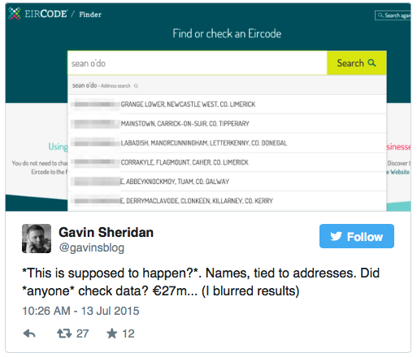

Comment: Addresses are part of Ireland’s national data infrastructure
ODI Associate Peter Wells shares his thoughts on why putting the right data infrastructure in place will help Ireland’s new postcode system, Eircode, meet Ireland’s needs in the future
Addresses are a core and fundamental asset for any country. CC BY 2.0, uploaded by [William Murphy](https://www.flickr.com/photos/infomatique/6941792010/in/photolist-ezi4VB-8uxRDQ-8uuKJH-bz9y8c-bAG2qT-JRwWA-gTSB5-bGz4pc-7RcpG3-9uE2mn-7Rcst5-7R9anz-7RcoEh-7R991n-5axPfW-bzquV9-7R96Hg-7R96xt-7R97a4-doYKu1-9nDUmh-rRFmvQ-4xpC5-4LzhKP-rCzcVd-7Rcvi3-7RcvrJ-7Rcw4d-7R9bMz-7Rcq5N-7RcpTY-7RcrXG-7R98ep-7R9cbK-7RcoTL-7RcsiE-7RcrdW-7RcroG-7R9dw4-7Rcphw-7Rcp6S-7R99k8-7R9awr-7R9dFX-7R9koa-7Rcwvq-7R9aUt-7Rcv3d-MXdPD-7NNuck “William Murphy").
The new Irish postcode system, Eircode, launched recently with the aim of helping people find every address in Ireland. Better addressing is a really good thing: it can help people get everything from a clothes delivery to an ambulance.
But unfortunately the new service seems to have hit some problems, Shannon Airport was missing and there are issues with privacy as some addresses are associated with individuals' names:
 Source: Twitter user Gavin Sheridan.
Addresses are a core and fundamental asset for any country. As more of our services become digital, both addresses and data infrastructure will only become more important.
Reflecting on the ODI’s recent work on Open Addresses and data infrastructure helped me analyse the problems with Eircode and provided useful ways to help resolve them.
Irish addressing needs and the Eircode solution
Wikipedia has a useful history of Irish addresses that explains why regional postcodes did not emerge in the same way as other countries. In recent years it has been recognised that the absence of postcodes causes problems for non-postal services and since 2005 it has been Irish government policy to improve addressing by introducing postcodes. The resulting solution is Eircode, a service operated by Capita.
Ireland has some unusual needs for addresses. Approximately 30% of Irish addresses are non-unique. Postal workers can only deliver post to them because they know which names correspond to which house. Irish residents have adapted to the astonishing capability of the local postal workers hence many do not know either their own or other people’s postal address. Instead they simply know addresses that work. Any solution for Irish postcodes has to understand these country-specific issues.
The solution that Eircode has chosen to meet these addressing needs is not a postcode as most people would understand it. Instead it is a 7-character unique property identifier similar to the Unique Property Reference Number (UPRN) that exists in UK address data. The UPRN is useful to help computers link and match data together.
A linked identifier for addresses is a very valuable thing, but it does not support the same needs as a human-friendly address or postcode. It’s hard for me to say if it was the right answer to Ireland’s problems without a more detailed understanding of Ireland’s specific needs.
If Eircode published its user research it would allow the community to provide feedback and allow it to understand if important user needs were not being met.
Address data should be open
Eircode has chosen to limit users to 15 website searches per day and has a complex charging structure for bulk usage. Organisations wishing to use Eircodes in bulk may also need to buy the Irish address list. That list is available for a charge from GeoDirectory. I would expect that the licensing and charging will limit the number of Eircode users and hence the value that is created. Both the local takeaway and the local food charity might struggle to afford the charges.
Research by Deloitte and others has shown that charging for core data like address data strongly suppresses demand. In Denmark releasing address data for free increased usage by a factor of between 10 and 100 and created significant social and economic value as a result. This is part of the force multiplier effect of open data.
Denmark along with many other countries has recognised the social and economic value of opening up address data, and following an open data strategy. Ireland could do the same. The social and economic benefits can justify the cost of publishing a public good like address data as open data.
Address data needs the right governance
The ODI’s initial paper on data infrastructure suggests a number of basic criteria for organisations that maintain core datasets. I compared Eircode against three of these criteria: transparency, openness and agility.
Transparency
The Irish government has declined to release the contract for Eircode on commercial grounds and there is little information on the website describing how the organisation operates. There is no mechanism for releasing open data on usage of Eircode and little information on how the data has been created. Increasing transparency for Eircode and its operations would sit well with the Irish Government’s open government policy.
Openness
There is no visible external user group to allow the user community to openly provide input or ask questions of the organisation. In this particular case, Eircode could even consider a collaborative maintenance model for the data to reduce costs and improve quality. Such a model could make it cost-effective to add support for Gaelic language addresses. It is surprising that the Eircode FAQ says that incorrect address information cannot be corrected. This may be complex to achieve, but it is a reasonable user need. Increasing the level of openness for the Eircode organisation and encouraging people to participate would seem to be a good way to increase its usefulness.
Agility
In common with other countries, we can expect that Irish user needs will have changed in recent years to support new services such as smartphone navigation. Meanwhile emerging technologies such as drones and automated cars are creating new requirements as fast as I can type. The Eircode organisation needs to be agile to keep pace with these changing technologies. It is too early to measure the new organisation’s agility but it is clear that agility will be required to help Irish citizens and the Irish economy to enjoy the benefits of the new services that will emerge over the coming years.
Building data infrastructure is tricky, but vital
While it is clear that Eircode has had a tough time launching, it is early days for the initiative and there is time to get it right.
The Open Data Institute’s data infrastructure work helped me understand some of the root causes of the current problems and suggest areas to improve.
The privacy issues clearly need resolving, but further iteration could start by recognising that addresses and postcodes are core data and investigating if there is a business case to publish Irish address and postcodes as open data.
Eircode, the Irish government and addressing stakeholders could then work together to understand their needs for agility, openness and transparency. I suspect that improvements on these three governance criteria will lead to a better service for Irish residents and business.
Data infrastructure is as vital to the digital revolution as transport infrastructure was to the industrial revolution. It will be necessary to build this infrastructure at global, national and local levels. Data infrastructure will help make sure that important and useful data is as widely used as possible.
Putting in place the right data infrastructure will help Ireland’s new postcode system, Eircode, meet Ireland’s needs in the future.
Peter Wells is an Associate at the Open Data Institute. You can chat with him @peterkwells.
If you have ideas or experience in open data that you'd like to share, pitch us a blog or tweet us at @ODIHQ.